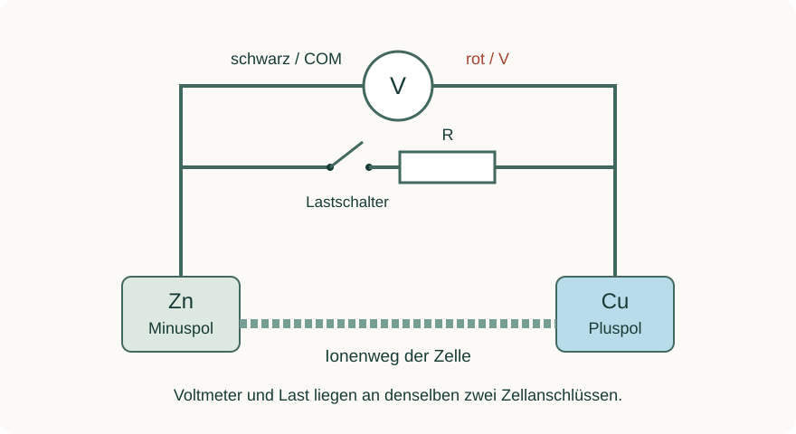

Informieren
Erklärung und Beispiel öffnen
Eine Zellspannung wird mit einem hochohmigen Voltmeter zwischen den Elektroden gemessen. Am Digitalmultimeter gehören die Leitungen in V und COM; gewählt wird der Gleichspannungsbereich. Die Anzeige bedeutet:
UAnzeige = Erot − Eschwarz
Rot an Cu und Schwarz an Zn ergibt bei der üblichen Daniell-Zelle eine positive Anzeige. Vertauschte Leitungen liefern bei sonst gleichen Bedingungen denselben Betrag mit negativem Vorzeichen. Eine Angabe wie „1,06“ ohne Einheit, Anschlussbelegung und Betriebszustand ist daher unvollständig.
Leerlauf bedeutet: kein äußerer Verbraucher angeschlossen. Ein reales Voltmeter nimmt dennoch einen kleinen Messstrom auf; die Messung ist nur näherungsweise stromlos. Wird ein Widerstand angeschlossen, fließt ein Entladestrom. Die Klemmenspannung fällt häufig durch inneren Widerstand und Polarisation ab. Nach Entfernen der Last kann sie sich teilweise erholen.

Aus der Spannung am bekannten Widerstand folgt der Betrag des Stroms durch diesen Widerstand: IR = |U|/R. Beispiel: 0,90 V an 10 000 Ω ergeben 0,000090 A = 0,090 mA = 90 µA. Der Gesamtstrom der Zelle ist um den kleinen Voltmeterstrom größer. Die Formel U/R mit dem Lastwiderstand darf nicht auf eine Messung angewandt werden, bei der dieser Widerstand gar nicht angeschlossen war.
Ein Leerlaufwert nahe 1,10 V ist kein Nachweis von Standardbedingungen und keine Garantie für eine große nutzbare Stromstärke. Dokumentiere Temperatur, Lösungen/Konzentrationen, Messzeit, Anschlussbelegung, Last und Einheit.
A · Messfolge auswerten
Die folgenden Werte sind ein didaktischer Übungsdatensatz für die Daniell-Zelle. Sofern nicht anders genannt: Rot an Cu, Schwarz an Zn. Der Lastwiderstand beträgt R = 10,0 kΩ.
| Schritt | Betriebszustand | Anzeige |
|---|---|---|
| 1 | Leerlauf | +1,07 V |
| 2 | Leerlauf, Messleitungen vertauscht | −1,07 V |
| 3 | Leerlauf, ursprüngliche Anschlüsse | +1,06 V |
| 4 | Last seit 10 s angeschlossen | +0,86 V |
| 5 | Last seit 30 s angeschlossen | +0,82 V |
| 6 | 30 s nach Entfernen der Last | +1,04 V |
- Erkläre das Vorzeichen in Schritt 2 und die Änderungen von Schritt 3 über 5 zu 6.
- Berechne die Stromstärke durch den Lastwiderstand in Schritt 4 und 5 jeweils in A und mA.
- Beurteile: „Schritt 6 zeigt, dass sich die verbrauchten Stoffe vollständig zurückgebildet haben.“
- Ergänze drei Angaben, die neben dieser Tabelle für ein nachvollziehbares reales Messprotokoll erforderlich wären.
Hilfe 1
Leitungswechsel ist ein Wechsel der Messrichtung. Beim Belastungswechsel verändert sich dagegen die Stromstärke der Zelle und damit oft auch ihre Klemmenspannung.
Hilfe 2
10,0 kΩ = 10 000 Ω. Teile 0,86 V und 0,82 V jeweils durch 10 000 Ω. Der Anstieg nach Entfernen der Last kann aus dem Wegfall innerer Spannungsverluste und der Erholung von Konzentrationsunterschieden folgen.
Musterlösung
Schritt 2 misst dieselbe Potentialdifferenz mit umgekehrter Messrichtung. Die Zelle selbst bleibt gleich gepolt. Beim Anschließen des Widerstands steigt der äußere Strom; innere Spannungsabfälle und Polarisation können die Klemmenspannung verringern. Nach Abtrennen der Last verschwinden strombedingte Verluste weitgehend und Konzentrationsprofile können sich entspannen, sodass die Anzeige wieder steigt.
I₄ = 0,86 V / 10 000 Ω = 0,000086 A = 0,086 mA
I₅ = 0,82 V / 10 000 Ω = 0,000082 A = 0,082 mA
Die Ströme beziehen sich auf den Widerstand, nicht exakt auf die Summe aus Last- und Messstrom. Schritt 6 belegt keine vollständige Stoffrückbildung und keinen Ladevorgang. Eine Erholung der Spannung ist möglich, obwohl der vorherige Netto-Stoffumsatz bestehen bleibt.
Ergänzt werden sollten beispielsweise tatsächliche Lösungskonzentrationen, Temperatur, Messgerät und dessen Eingangswiderstand, Zeitpunkt nach Aufbau sowie Elektroden- und Frittenzustand. Drei passende Angaben genügen.
B · Eine plausible Anzeige kritisch prüfen
Eine zweite Zelle zeigt im Leerlauf +1,05 V, mit 10,0 kΩ Last aber nur +0,05 V. Das Voltmeter hat im verwendeten Bereich einen Eingangswiderstand von 10,0 MΩ. Ein Mitschüler behauptet: „Die Leerlaufspannung beweist, dass die Ionenverbindung in Ordnung ist. Die Zelle kann also genauso viel Strom liefern wie die erste.“
- Berechne den Strom durch den Lastwiderstand und den näherungsweisen Voltmeterstrom im Leerlauf. Vergleiche die Größenordnungen.
- Beurteile die Behauptung. Nenne zwei mögliche Ursachen des starken Spannungseinbruchs und beschreibe eine passende Kontrolle auf Grundlage des vorhandenen Unterrichtsaufbaus.
- Eine dritte Aufzeichnung lautet nur „U = −0,82 V“. Nenne mindestens zwei Informationen, die fehlen, um Polung und Belastung daraus zuverlässig zu beurteilen.
Hilfe 1
Ein hochohmiges Messgerät belastet eine Zelle viel schwächer als ein Lastwiderstand. Eine Spannung allein bestimmt nicht die Fähigkeit, unter Last Strom zu liefern.
Hilfe 2
10,0 MΩ = 10 000 000 Ω. Für den Leerlauf-Messstrom verwende 1,05 V; für den Laststrom 0,05 V. Der Zustand der Fritte und der elektrische Kontakt sind mögliche Prüfpunkte, keine schon bewiesenen Ursachen.
Musterlösung
ILast = 0,05 V / 10 000 Ω = 5,0 · 10⁻⁶ A = 5,0 µA
IV,Leerlauf ≈ 1,05 V / 10 000 000 Ω = 1,05 · 10⁻⁷ A = 0,105 µA
Der Laststrom ist hier etwa 48-mal so groß wie der vorherige Voltmeterstrom, aber deutlich kleiner als die 82 µA aus Aufgabe A. Die Leerlaufanzeige beweist keine ausreichend leitfähige Ionenverbindung für einen größeren Entladestrom.
Ein hoher innerer Widerstand durch schlecht benetzte oder verstopfte Frittenporen wäre eine mögliche Ursache; schlechte metallische Kontakte oder stark abweichende Lösungen wären weitere. Die vorhandene Fritte und deren Benetzung sowie die festen Kontakte lassen sich anhand des Unterrichtsaufbaus kontrollieren. Der Widerstandswert und die Anschlussbelegung sind ebenfalls zu prüfen. Aus den Spannungswerten allein folgt keine eindeutige Fehlerdiagnose; die Fritte wird für diese Aufgabe nicht entfernt oder absichtlich blockiert.
Bei „−0,82 V“ fehlen zum Beispiel die Zuordnung von Rot/Schwarz zu den Elektroden und die Angabe, ob ein Lastwiderstand angeschlossen war. Ein Minuszeichen allein sagt nicht, welches Metall der Minuspol ist.
Zurück zur Checkliste
Kannst du den Punkt jetzt an einer eigenen Erklärung oder einer neuen Aufgabe nachweisen? Ordne dich ein: sicher (selbstständig), teils (mit Hilfe) oder offen (noch Lernbedarf). Notiere bei Bedarf, was du noch klären möchtest.
Fachliche Quellen und Modellgrenzen
Eigene Lerntexte, Aufgaben, modellhafte Daten und Abbildungen. Fachliche Grundlagen:
- OpenStax, Chemistry 2e: Galvanic Cells
- OpenStax, College Physics 2e: Electromotive Force – Terminal Voltage
Die Beispiele verwenden vereinfachte Metall/Metallionen-Systeme. Reale Beobachtungen hängen auch von Konzentration, Oberfläche, Zeit und Nebenreaktionen ab.